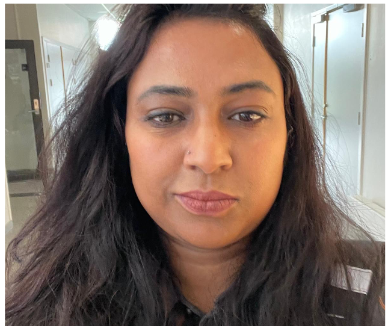

Shahzadi Hina Gul
Jeg er en positiv, strukturert og lærevillig person med interesse for IT, informasjonssystemer og digitale løsninger. Gjennom studiene har jeg fått erfaring med systemutvikling, prosjektarbeid og hvordan teknologi kan brukes til å løse praktiske utfordringer.
Jeg har også erfaring med CRM-systemer og Salesforce, samt en bakgrunn innen økonomi og handel. Denne kombinasjonen har gitt meg interesse for både den tekniske siden av IT og hvordan digitale systemer kan støtte virksomheters behov og arbeidsprosesser.
Som person er jeg samarbeidsorientert, nysgjerrig og løsningsorientert. Jeg liker å lære nye ting, dele ideer og bidra til godt samarbeid. Jeg er spesielt interessert i hvordan IT, informasjon og forretningsforståelse kan kombineres for å utvikle gode og brukervennlige løsninger.
- Informasjonssystemer: Systemutvikling, digitale løsninger og forretningsprosesser
- CRM-systemer: Salesforce og forståelse av kundehåndteringssystemer
- Frontend-utvikling: HTML, CSS, JavaScript
- Programmering: Java, Python og C#
- Database-utvikling: SQL og MySQL
- UX/UI-design: Figma, prototyping og brukergrensesnitt
- Webutvikling: Geografisk Webutvikling
- Utviklerverktøy: Git, GitHub, Docker, VS Code og basis kjenskap av Figma
- Forretningsforståelse: Økonomi, handel og hvordan IT-systemer støtter virksomhetsbehov